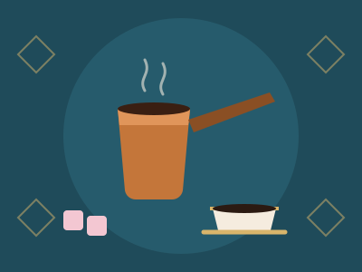

Istanbul, Türkiye
Türk Kahvesi
Cardamom-kissed, brewed slowly in a copper cezve and served with a cube of rose lokum.
$5.50
Prologue Dawn
Travel Café · Est. on Wanderer's Lane
Scroll to begin the journey
6:00 a.m. The city is still asleep.
But on Wanderer's Lane the shutters are rising, and every cup we pour has already travelled further than most of us ever will.
Chapter 01 · Origins
Our story begins 2,000 metres up, in the misty forests of Kaffa, Ethiopia.
Legend says a goat herder named Kaldi saw his goats dancing after eating bright red cherries.
Farmers still pick each cherry by hand, and only once it has turned red.
Inside every cherry are two green seeds: the beans that will travel the world.
Chapter 02 · The Voyage
Chapter 03 · The Roast
In our roastery, beans go in green and grassy.
At 150°C the sugars caramelise, and the Maillard reaction turns them gold, then cinnamon.
At 196°C comes first crack. The beans pop like popcorn and the room smells of toast and chocolate.
We stop at the moment each origin tastes most like home.
Chapter 04 · The Pour
Water at 94°C, never boiling, because boiling water scorches.
First comes the bloom: a small pour, thirty seconds, while the grounds breathe out.
Then slow circles: one gram of coffee for every sixteen of water.
Three and a half minutes later: a cup that tastes of the place it came from.
Every season, our window travels.
For three months at a time the café takes up residence in a new city: its music, its pastries, its rituals.
Same table. Same corner. A different world outside.
“I came for a croissant and stayed for the accordion records.”
Léa, regular since Paris season
“The matcha ceremony on Sunday mornings is the calmest hour of my week.”
Kenji, visiting from Osaka
“They pour mint tea from a metre up. I clapped. Everyone clapped.”
Amira, first visit
Your cup is empty.
Epilogue · Your Table